视频变换
打开面板右上角的检查器，快捷键：cmd+4
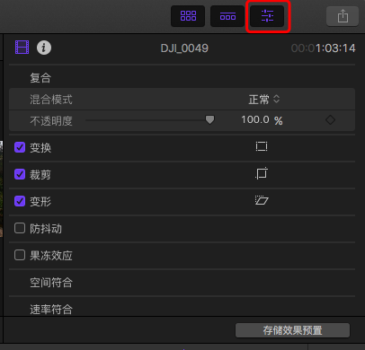
也可以通过视频左下角的按钮来进行变换、剪裁和变形，该种方法可以出现定界框，可以对视频进行鼠标缩放。最后点击“完成”保存。
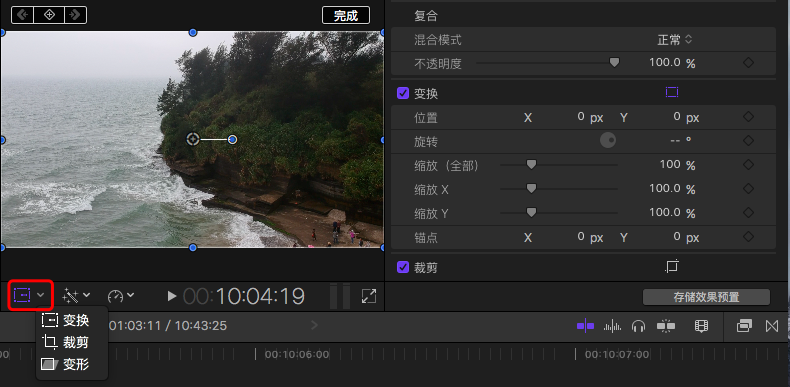
变换
变换包括以下功能：
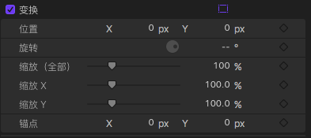
裁剪
裁剪包括：修剪、裁剪和 Ken Burns。
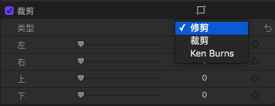
- 修剪：将视频进行剪切，视频的长宽会随之减小。
- 裁剪：保持视频原宽高不变，裁剪部分自动放大填。
- KB：控制开始与结束的显示窗口，会在播放时进行视频大小的动态变化。下图红框中的按钮可以实现开始结束的反向变换。
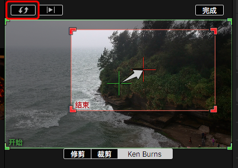
通过变换（缩小）和，粘贴属性，可以实现多视频的同时显示
变形
变形包括以下功能：
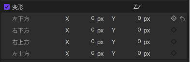
静止图像控制(Still Image)
静止图像控制是指插入图片，可在“Final Cut Pro - 偏好设置 - 编辑”中设置静止图像的默认播放长度。
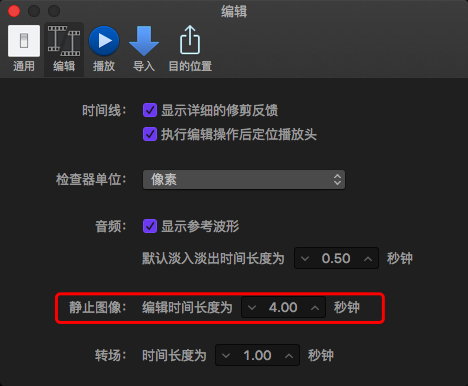
批量修改长度：选中所有图片，快捷键：ctrl+d，输入时间，则所有图片的播放长度都将改为该时间长度。
空间符合：选中图片，打开检查器（cmd+4），空间符合可选择“适合”和“填充”，对应于 background-size 中的 contain 和 cover。
图片中配合变换、裁剪和变形实现静止图像的动态变化。
转场
选中两个视频片段，按下 cmd+t，会在两个视频前后和中间添加三个转场
选中一个视频片段，按下 cmd+t，会在一个视频前后添加两个转场
选中开头([)或结尾(])，按下 cmd+t，会在当前视频的开头或结尾添加一个转场
选中多个视频片段，按下 cmd+t，会在多个视频前后和中间添加 N+1 个转场
可以拖动修改专场时间长度，或 ctrl+d 手动输入长度。
在“偏好设置 - 编辑”中，可以设置默认的转场长度。
修改转场参数
打开转场目录，可以选择不同的效果拖入到已有转场中。
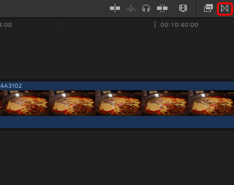
快捷键：shift+cmd+5
打开检查器，可以修改该转场效果的参数。
默认转场效果为：交叉溶解。
修改转场效果的方式为：在转场面板上选择某个转场效果-右键-设为默认
注：转场只会加到视频上，默认不加到音频上。
cmd+4 可以继续修改转场属性。
注：当视频长度不够，无法创建转场效果
添加视频效果
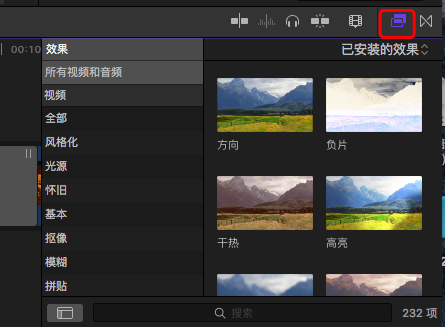
快捷键：cmd+5
将效果拖动到视频上，或双击，可将效果应用于视频片段。cmd+4打开检查器，可修改效果的参数。
效果可进行叠加。
多个片段添加效果时，可用如下方式：
- 选中需要添加效果的视频片段，双击效果
- 选中需要添加效果的视频片段，右键－建立复合片段，多个视频变为一个后再添加效果
删除效果的方法：
- 编辑 － 移除效果
- 编辑 － 移除属性
常用效果：暗角、着色等
添加音频效果
音频效果菜单与视频相同。
选择视频片段，再选择音频效果，按下 space 键试听效果。
效果可进行叠加。
拷贝效果：选中需要拷贝的视频（音）频文件，编辑－粘贴属性
关键帧
关键帧用于实现过渡效果。首先打开效果面板，打开检查器面板。
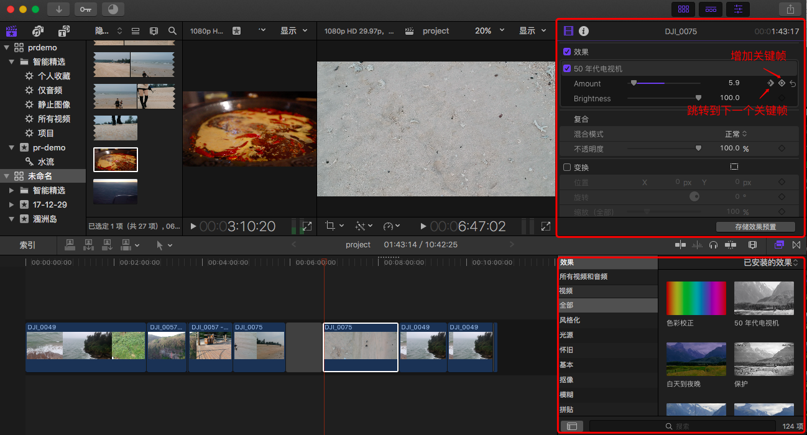
将效果应用于视频片段后，加入初始关键帧，在需要变换的位置设定不同的效果参数，即可实现效果的变换。
查看当前视频片段的所有关键帧及效果：在视频片段上右键－显示视频动画，可拖动效果使多个效果对齐。
加入关键帧快捷键：opt+鼠标左键
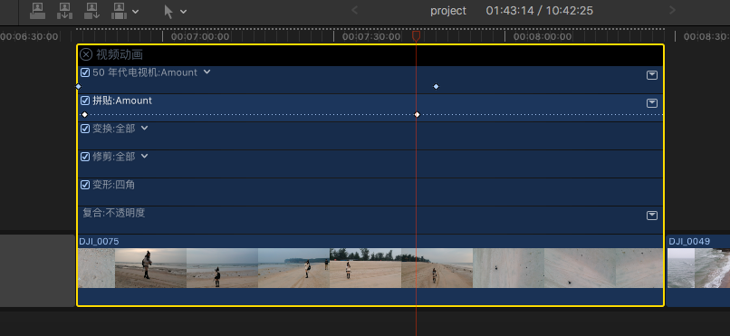
点击效果右侧小箭头，可展开查看效果变化曲线。
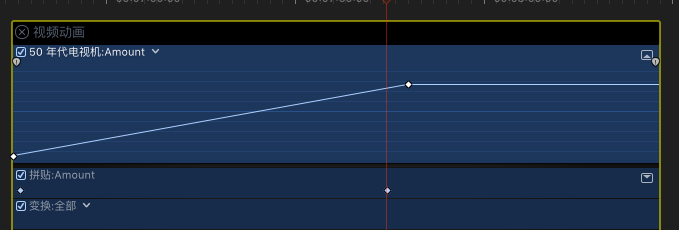
拷贝效果：选中视频片段，编辑－拷贝（cmd+c），选中另一个视频片段，编辑－粘贴效果（opt+cmd+v），此时可在新的视频片段中发现已经拥有了原视频的效果。
注：此种方式保持了原效果的长度，如果新视频片段的长度比原视频片段长度小，则效果只能展示一部分。
若想使效果等比缩短，则需要编辑－粘贴属性（shift+cmd+v），选择“拉伸以适合”即可。
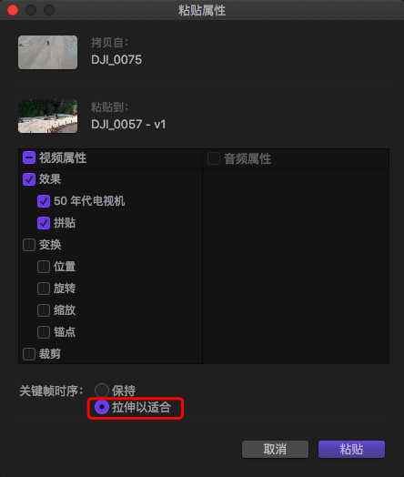
将效果存为预设：在检查器面板中选择“存储效果预设”，点击存储，则会在效果面板中找到已存储的效果预设。
音频操作类似。
内置预设字幕
字幕设置入口：
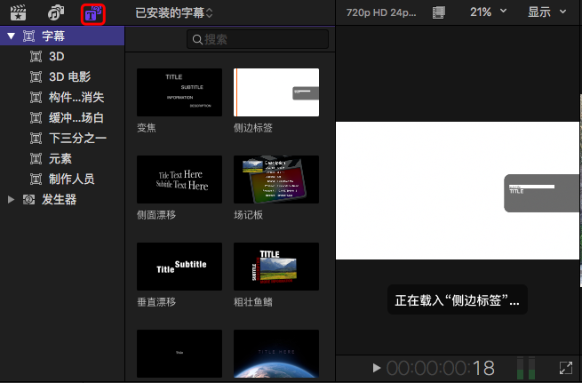
选择字幕，按下 Q 键将字幕加入到视频中。若修改动画参数，可打开检查器（cmd+4）进行调整。
点击箭头部分可存储字幕预设。
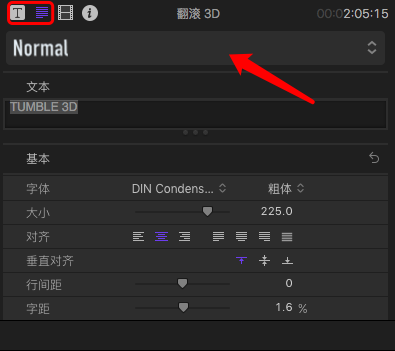
复制字幕：按住 opt 鼠标拖动某个字幕
替换字幕：将某个字幕拖动到已有字幕中
效果发生器
当出现某个视频片段空缺时，可以考虑使用效果发生器：
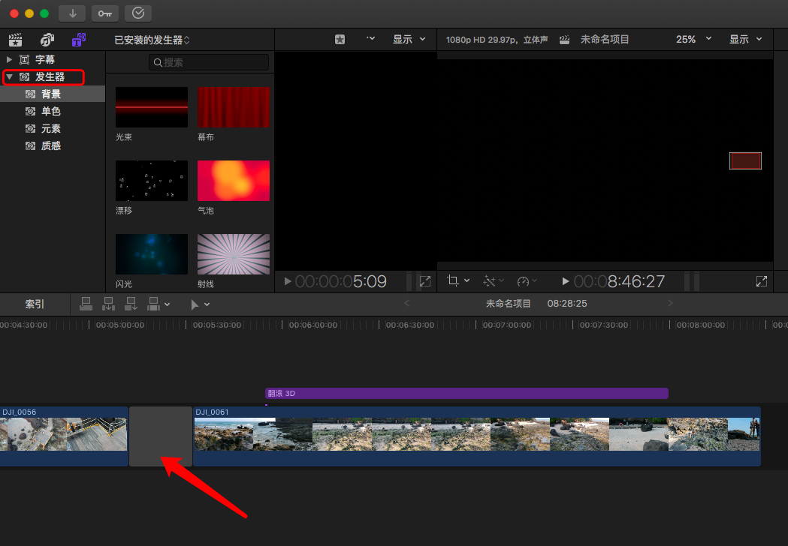
1 | 小技巧： |
在选择了入点和出点后，选中某个发生器，按下 Q 键，插入发生器。或通过鼠标拖动的方式，将发生器拖入到视频中。
举个栗子：占位符发生器+视频+亮度抠像器效果，可实现抠像效果。
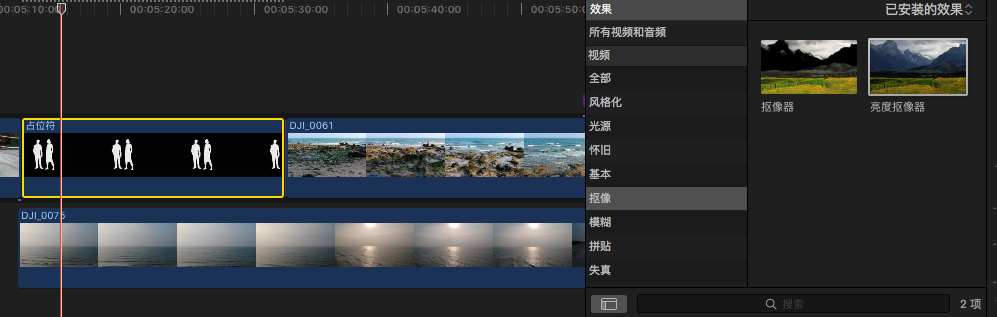
静止帧与时间重映射
方法一：
将指针放到需要变为静止帧的视频片段位置，选择“编辑－添加静帧”（快捷键：opt+F）。
通过“FinalCutPro－命令－自定”可修改快捷键。
通过“FinalCutPro－偏好设置”可修改静止帧时间。
通过“ctrl+d”可以设置视频片段（含静帧）的时间长度。
方法二：
选中视频片段，将指针放到需要变为静止帧的视频片段位置，选择“保留”（快捷键：shift+H）
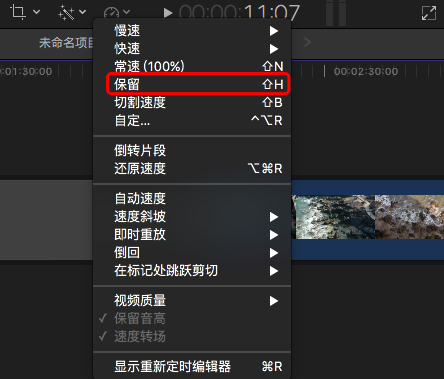
cmd+R 可以开启／关闭时间窗口。
视频片段变为：
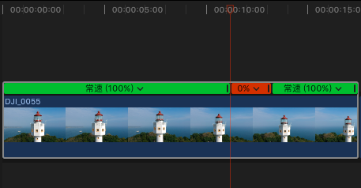
点击中间的静止片段，选择“使结尾转场平滑”。
或选择入点和出点后（可通过选择范围来进行选择，快捷键 R），选择“表盘”小图标，设置速度，则对入点和出点之间的片段部分设置了速度。
倒转播放：选择“表盘”小图标，选择“倒转片段”。
注：拖动时间线改变的是时间，拖动视频是对视频进行切割。
在“表盘”小图标中：
- 倒回：指将选中的片段复制后再倒放一遍
- 即时重放：指将选中的片段复制后重新播放一次
- 在标记处跳跃剪切：指将标记处进行剪切
PSD 文件分层操作
PSD 可以用来插入水印。
可以双击进入，对每个图层进行编辑。编辑方法同视频。
在检查器中可以修改混合模式。